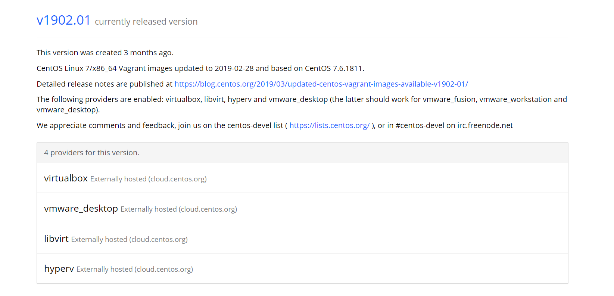
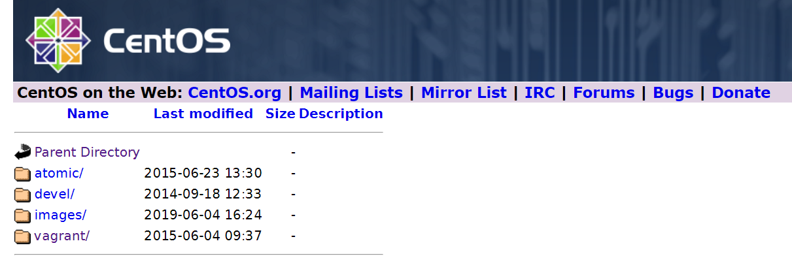
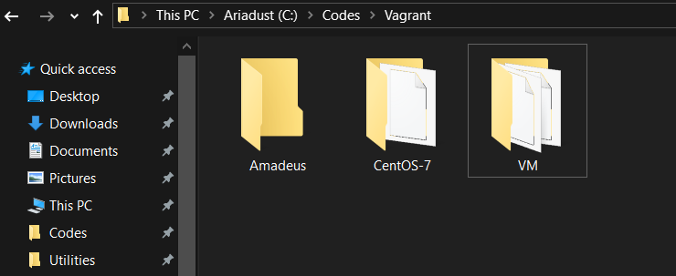

Basic Vagrant Initialization (with VirtualBox in Windows)
Installation
The official sites of Vagrant is here and VirtualBox’s is here.
Following their default option to install is rather practical. After
the installation is complete, make sure the Environment variables
contains vagrant.exe’s path. To assure this, You may be asked to
restart your PC.
Get Box Preparation Ready
Choose a folder to place your vagrant box, that is, the virtual machine.
By the way, Vagrant provides commands to init and install box simultaneously
like
1 | $ vagrant init hashicorp/precise64 |
But I suggest to download a box file manually from this site, find
the distro you want and go to host to download directly via tools like
Free Download Manager, etc. Place it in a nearby directory beside your
vagrant box directory chosen before.
For example, I choose CentOS 7 and go to the description page and it goes
like this

then go to VirtualBox Externally hosted site, as demonstrated below

and click and click, find the latest version, use those downloading
tools to get them. Guess what, the hosted images are sometimes further
newer than those listed on the Vagrant Cloud page.
As for those you cannot find the direct downloading link, try the official
way in the command line then copy the link appears in the output messages
to downloading tools such as Free Download Manager.
Here, I placed the box downloaded before in VM directory and chose theAmadeus directory to store those virtual machine configuration files.

Initialization Commands
Open a terminal in Amadeus directory, and type command
1 | vagrant box add BOXNAME BOXPATH |
for instance, the output shall be like messages below
1 | C:\Codes\Vagrant\Amadeus>vagrant box add Amadeus ..\VM\CentOS-7-x86_64-Vagrant-1905_01.VirtualBox.box |
Then, type vagrant init, the output is
1 | C:\Codes\Vagrant\Amadeus>vagrant init |
How to Edit the Vagrantfile
The Vagrantfile generated defines the behavior of the virtual machine,
from host name to network settings, and it is written in Ruby, so please
make sure the ends are closed properly after your editing.
Let’s fire up vim and edit it. The comments are pretty detailed, but there
are more customization options.
Naming
Choose a fancy hostname and box name by adding these lines
1 | config.vm.box = "Amadeus" # box added before |
And between config.vm.provider "virtualbox" do |vb| and its paired end
add these lines. Anf if you want to customize the memory and cpu usages
allocated to the box, you can define them here.
1 | vb.gui = false |
Network
guest in this scenario refers to the Vagrant virtual machine, whilehost means your Windows.
1 | config.vm.network "forwarded_port", guest: 80, host: 8080 |
Shared Folder
Or synced folder, according to Vagrantfile. The former one is host’s
directory, the latter is virtual machine’s.
1 | config.vm.synced_folder "C:/Codes/Projects", "/home/projects" |
Finally…
The whole Vagrantfile goes like below
1 | Vagrant.configure("2") do |config| |
Before vagrant up, you should install plugin vbguest
1 | C:\Codes\Vagrant\Amadeus>vagrant plugin install vagrant-vbguest |
The outputs are below, give the permission when the prompting window
pops up.
1 | Installing the 'vagrant-vbguest' plugin. This can take a few minutes... |
Then type vagrant up, notice there might be a kernel compilation
process for kernel. After that, everything shall be fine.
Use vagrant ssh to access the virtual machine under the Amadeus
directory.
If you changed the Vagrantfile, use vagrant reload to reboot the machine.
To shutdown the virtual machine, use vagrant halt.